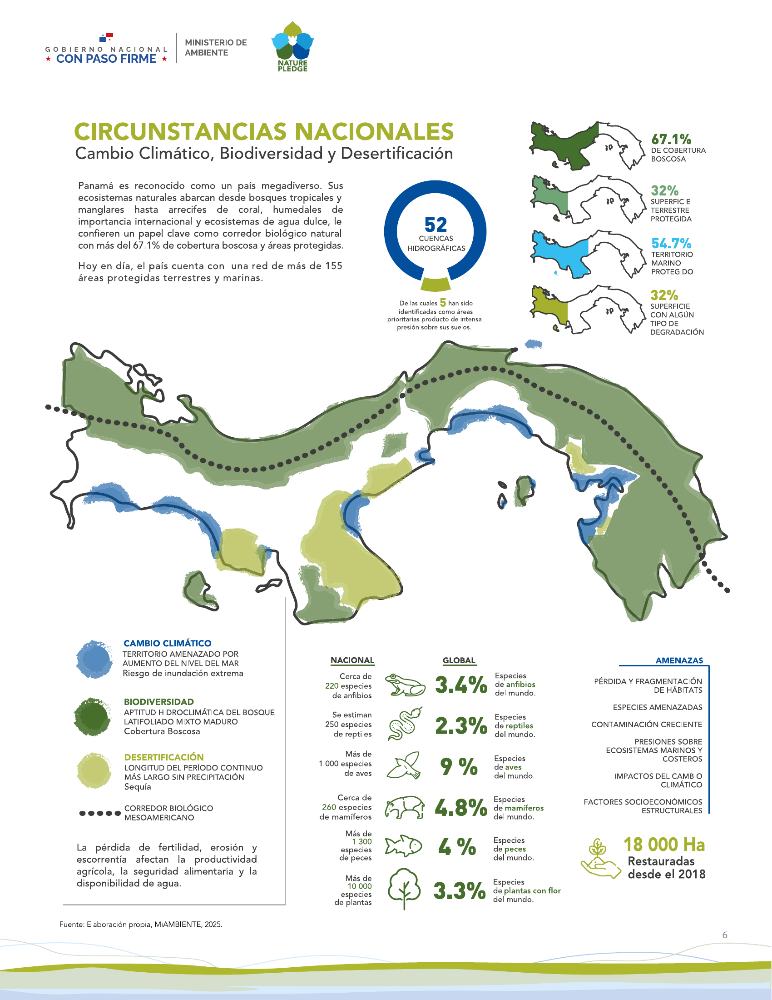
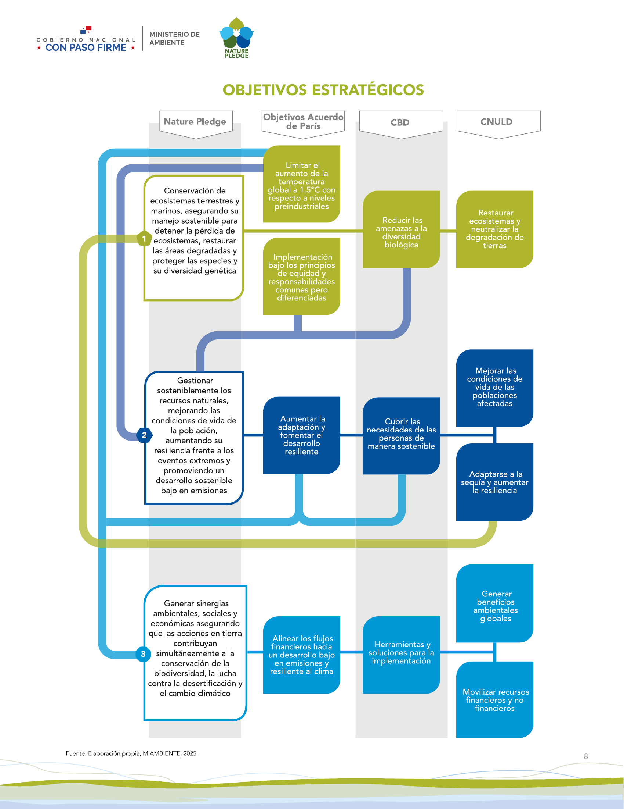
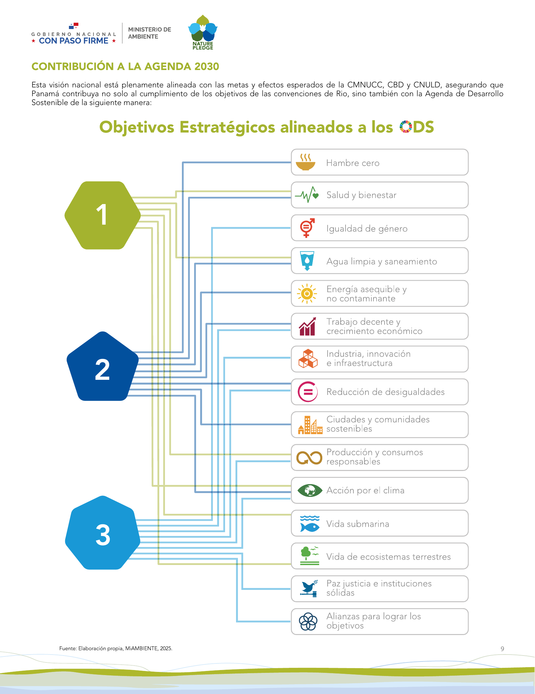

This document was prepared by the Ministry of Environment of Panama (MiAMBIENTE) in collaboration with national and international actors and authorities.
Panama, 2025.
Authorities — Ministry of Environment
Juan Carlos Navarro, Minister of Environment
Oscar Vallarino, Deputy Minister of Environment
Gisela Rivera, Secretary General
Juan Carlos Monterrey, Special Representative for Climate Change
Tomás Fernández, National Director of Protected Areas and Biodiversity
Karima Lince, National Director of Water Security
Carlos Espinosa, National Forest Director
Marilyn García-Paredes, National Director of Environmental Performance Verification
Digna Barsallo De León, National Director of Coasts and Seas
Fanny Gonzáles, Head of the Office of Environment for Indigenous Peoples
Technical Coordination: Melani Acosta, Selene Orozco Marmolejo, Megan Chen Chung, Ana Luisa Aguilar
Technical support: Javier Martínez Cedeño, Katherine Martínez, Juan Lucero, Mabel Zúñiga, Yuriza Guerrero, Raúl Gutiérrez, Carolina Velásquez, Darío Luque, Jonathan Rodríguez, Keneth Morán, Karen Victoria, Claudia Carranza, Debbra Cisneros, Jovel Núñez Torres
Text Editing: Melani Acosta Chin, Selene Orozco Marmolejo, Megan Chen Chung
Design and Layout: Manuel Fernández, José Palacios, Gustavo Palacio
In collaboration with: Ministry of Health, Ministry of Agricultural Development, National Energy Secretariat, Urban and Household Sanitation Authority
Additionally, we acknowledge and recognise the valuable contributions made by member entities of Panama's National Committee on Climate Change, the Interinstitutional Biodiversity Commission and the National Committee to Combat Drought and Desertification in the preparation of this initiative.
We also acknowledge the technical support of United Nations System agencies: UNDP, FAO, UNEP, UNICEF, UN Women and OHCHR, whose contributions strengthened this document and incorporated a comprehensive vision.
None of this would be possible without the support of H.E. José Raúl Mulino, President of the Republic, and H.E. Chancellor Javier Martínez-Acha, Minister of Foreign Affairs, whose state vision and commitment to Panama's environmental sovereignty have enabled nature, justice and development to walk together.
The planet is agonising. The world is in crisis. We see it in the forests being felled and burned, in the lands that dry out and crack and become unproductive, in the seas that overheat and lose their biodiversity. We see it in communities displaced by floods, in crops lost to droughts, in fishermen returning with empty nets and in girls and boys who inherit a future marked by uncertainty. Enough! We cannot remain trapped in a broken system where institutions work in isolation and solutions are diluted while nature bleeds. The Republic of Panama, fulfilling its constitutional mandate to guarantee a healthy and sustainable environment, declares its decision to act with urgency and coherence, uniting science, public policy and territory.
Panama's Pact with Nature (Nature Pledge), announced by President José Raúl Mulino at the 2025 United Nations General Assembly, is our manifesto of survival and dignity: a unified framework that integrates, in coherence with the multilateral system and national realities, our goals in climate change, biodiversity, combating desertification, plastics, marine and terrestrial conservation into a single country plan with clarity and transparency. This approach responds to the call of the first Global Stocktake of the Paris Agreement and the Sustainable Development Goals, overcoming fragmentation and prioritising integrated and multi-sectoral solutions.
Our goals are concrete and comprehensive. By 2027, we will drive the realisation, revitalisation and full consolidation of the country's national parks and protected areas system, strengthening its management under the highest international standards. From now until 2035, we commit to restoring 100,000 hectares of ecosystems; achieving net zero deforestation; reducing our emissions by 11%; and decreasing plastic pollution by 50%. Likewise, by that same year, 40% of our land territory and 60% of our seas will be officially protected, consolidating Panama as a global leader in conservation and sustainability. These goals, taken together, are the core of a common vision that protects the life, economy and identity of Panama, with verifiable indicators and public monitoring mechanisms developed in the technical annexes. To achieve these objectives, we will establish the Panama Natural Fund, announced by the Government of Panama at the 2025 United Nations General Assembly, to guarantee permanent, long-term financing for nature and biodiversity conservation.
But conservation is not enough: we also need to regenerate and restore — we will recover degraded lands, sustainably manage soils and watersheds, and protect water as a common good. Our ocean is the backbone of our identity and economy: we will strengthen marine protection and combat plastic pollution, ensuring healthy marine, coastal and island ecosystems and sustainable fisheries. We will halt the loss of species and habitats, and ensure that ancestral knowledge and the benefits of nature are cared for, conserved and shared in a fair and equitable manner. Because we understand that there is no climate justice without ecological justice, nor ecological justice without social justice: both depend on conserving nature today and guaranteeing its care and protection forever.
Adaptation is an inseparable part of this vision. With the Regional Climate and Nature Observatories, we will bring science, innovation, conservation and traditional knowledge to every territory. These centres will not be limited to climate matters: they will be the comprehensive platform where all the Nature Pledge commitments are realised, from restoration to biodiversity protection, water management, combating pollution and community resilience. There, on the ground, the synergy we proclaim today will be lived: a space where nature, society and the economy work together in the same direction. Through the observatories, we will work at the local level to include children, adolescents and youth in designing solutions that will impact their future.
As a country of oceanic vocation, Panama takes on additional commitments for the protection of the ocean in all its dimensions. We will lead the global movement for the creation of the first High Seas Marine Protected Area, covering 10 million square kilometres, to safeguard the high seas ocean boundaries of the Tropical Eastern Pacific Marine Corridor, vital for migratory species such as humpback whales.
We support the global Antarctic Avengers campaign, which seeks to halt destructive industrial fishing in Antarctica, including krill fishing — the indispensable food for whales that migrate from those frozen seas to our tropical sanctuaries in Panama. We will lead the Silent Ocean Coalition, aimed at reducing underwater acoustic pollution and its impacts on migratory marine species. We will maintain a firm position of opposition to deep-sea mining in all spaces, promoting a global moratorium based on the precautionary principle. We will also lead the Coalition of Pioneer Countries of the Treaty on Biodiversity Beyond National Jurisdiction (BBNJ), promoting its firm entry into force and its equitable implementation.
We recognise that losses and damages resulting from the global environmental crisis are already unavoidable in many cases. Floods, droughts, heat waves and forced displacement are not future threats — they are present realities, with direct effects on human health and quality of life. We commit to strengthening the national monitoring and evaluation system for losses and damages, ensuring science-based decisions and rapid responses across all territories. And when no alternative remains, we will apply a Planned Relocation Protocol, dignified and fair, that ensures the rights and livelihoods of communities that must rebuild their future on safe ground, as Panama was already compelled to do in Guna Yala in the community of Gardi Sugdub. This system will be coordinated with the National Climate Transparency Platform (PNTC) and sectoral information systems.
We are aware that none of this will be possible without permanent financing. That is why we affirm that the Panama Natural Fund is the cornerstone of this commitment: a tool designed to protect conservation and resilience, ensuring stable, permanent, predictable and long-term financing. We will prioritise international cooperation and new, additional, predictable and accessible environmental financing, including innovative instruments that do not increase the country's public debt, but rather the contrary: those that contribute to reducing debt and bringing its flows back to the country. Likewise, we recognise the key role of the private sector and public-private partnerships in mobilising investment, technology and green employment. We will promote entrepreneurship and private investment proactively and enthusiastically, prioritising free enterprise and sustainability.
Within this framework, we also take on the fundamental transformation that environmental justice demands. We bet on a just transition that puts an end to dependence on fossil fuels and ensures clean and accessible energy for all. We commit to resilient agri-food systems capable of guaranteeing food sovereignty and dignified livelihoods for farmers, rural women, indigenous peoples, local communities and Afro-descendant communities. We will promote sustainable cities, designed with nature-based solutions, resilient infrastructure and clean mobility. And we propose to build a circular economy that eradicates plastic pollution and transforms waste into innovation and opportunities. Gender equality and women's empowerment will be transversal principles of this transformation. With this we will protect public health and well-being, reducing the risks of heat waves, diseases and extreme events.
No one can be left behind. Women, children, youth, indigenous peoples, Afro-descendants, rural and coastal communities, older persons, persons with disabilities, entrepreneurs, business people, investors, academics and activists. This Pact includes every person, community and living being in our land. Climate justice is not an aspiration — it is an ethical and political mandate.
To the whole world we say: enough of empty rhetoric. Join us. Governments, companies, academia, peoples, business people, philanthropists, investors, youth. Bring capital, technology, political will. Our commitment aligns with an agenda of effective cooperation that converts ambition into results. Nature does not wait, and neither do we. Panama is ready. Not to keep following a broken game, but to change the rules. Not to manage the crisis, but to lead the transformation.
In coherence with this integrating vision, we call on the United Nations system, particularly the Secretariats of the Rio Conventions, to accelerate their own integration. It is not sustainable to negotiate interdependent solutions in three separate conferences. We propose coordinating agendas and calendars, establishing joint high-level segments, creating integrated financing windows and harmonising reporting frameworks, with full respect for mandates. We also invite consideration of decision-making modalities that ensure timeliness and effectiveness: when, after good faith efforts, consensus is not possible, to adopt decisions by majority, transparently and inclusively, in accordance with the practices of the General Assembly. Just as we are asked to integrate, we ask that the multilateral system integrate its governance to convert ambition into results.
This is our manifesto. This is Panama's Pact with Nature: a living movement, an irrevocable commitment to life, justice and hope. Climate justice is not an aspiration — it is an ethical and political mandate. Fragmentation weakened us; working together will make us invincible today and tomorrow. This is the path. Our future begins today.
Juan Carlos Navarro, Minister of Environment

Panama's Pact with Nature adopts an integrated national vision that unites climate, biodiversity and sustainable land management commitments under a framework of sustainability, resilience and environmental justice. Its approach seeks to ensure that all actions simultaneously contribute to mitigation, adaptation, restoration and conservation, avoiding duplicated efforts and maximising joint benefits.
Panama's Pact with Nature guides the country's efforts towards protecting nature, restoring degraded ecosystems, adapting to climate change and strengthening community resilience. This vision reaffirms Panama's environmental leadership and its commitment to the well-being of the population and the health of ecosystems.
It is fully aligned with the Government Strategic Plan 2024–2029, which prioritises water sustainability, food security, climate change and territorial governance. Therefore, the Pact's actions directly respond to national development goals and strengthen the integration between environmental and socio-economic policies.
Panama's Pact with Nature is Panama's commitment to move from plans to action. More than a compilation of documents, the Pact is a living agenda that integrates our efforts on biodiversity, climate change, land degradation, oceans and plastics. Through it, we present in a unified manner the following strategic documents, adopting an integrated and technical-operational approach:
This approach directs the national vision towards three integrated strategic objectives of Panama's Pact with Nature and ensures traceability with the Global Biodiversity Framework Objectives, the UNCCD Strategic Framework Objectives and the Paris Agreement objectives, which are detailed below.


The implementation of the vision and strategic objectives of Panama's Pact with Nature will be based on cross-cutting principles that guide all actions and ensure coherence between biodiversity, climate change and land degradation neutrality.
Institutional and territorial integration: Strengthening coordination mechanisms between institutions and levels of government (national, indigenous comarca and local). The proposal to integrate the National Committee on Climate Change, the National Committee to Combat Drought and Desertification, and the Inter-Institutional Commission on Biodiversity is promoted, ensuring the participation of local governments and indigenous peoples' authorities.
Active and effective community participation: The inclusion of local communities, producers, indigenous peoples, youth and civil society will be promoted. This principle recognizes the efforts and roadmap for implementing the Escazú Agreement in the country, including proactive disclosure mechanisms, early and inclusive consultation, and safeguards for environmental defenders.
Human rights approach, gender equality and intergenerational equity: Equal opportunities and the inclusion of vulnerable groups will be ensured.
Synergistic biodiversity-land-climate approach: Actions will be designed to generate simultaneous co-benefits.
Bioeconomy and circular economy approach: Value generation from the sustainable use of biodiversity will be promoted.
Transparency, data and knowledge: Decision-making will be based on scientific information and traditional knowledge.
Source: Own elaboration, MiAMBIENTE, 2025.
The application of these principles will ensure that implementation is inclusive, equitable and coherent, and that it multiplies positive impacts. In practice, each programme, project or policy derived from this strategy will be evaluated in light of these principles, guaranteeing productive and recovering lands, resilient and prosperous communities and an integrated management of the territory that simultaneously contributes to national well-being and to the fulfilment of global environmental agreements.
This annex constitutes Panama's response to the global call to communicate in a clearer, more transparent and more comprehensible manner its actions to mitigate and adapt to climate change. It reflects the country's commitment to climate ambition, accountability and effective implementation of the Paris Agreement, incorporating assumptions, methodologies and institutional frameworks that underpin its climate action. This information will be periodically updated and monitored through the Biennial Transparency Reports (BTR), in accordance with the Enhanced Transparency Framework.
Panama's Nationally Determined Contribution (NDC) 3.0 comprises two main components:
Within the framework of the Paris Agreement, Panama presents the Information to Facilitate Clarity, Transparency and Understanding (ICTU), a mechanism designed to transparently report the update of Nationally Determined Contributions (NDCs). This instrument provides clarity on the objectives, methodologies applied and assumptions used, facilitating their understanding and international monitoring. Below, Panama sets out the progress and assumptions underpinning NDC 3.0.
|
1. Quantifiable information on the reference point |
|
|
1(a) Reference year, reference period or other starting point |
Reference period: 2021–2035 (Business as Usual "BAU" scenario). |
|
1(b) Quantifiable information on the reference indicators, their values in the reference year, base year, reference period or other starting point, and, as applicable |
Greenhouse Gas (GHG) emissions, excluding the Land Use, Land-Use Change and Forestry (LULUCF) sector, expressed in kilotonnes of carbon dioxide equivalent:
|
|
1(c) Other relevant information |
The target covers the entire economy, building on existing sectoral commitments from NDC1 and NDC2 with emission reductions in the Energy, Agriculture, Waste, Industrial Processes and Product Use sectors relative to a BAU scenario, and in the LULUCF sector achieving the restoration and reforestation of 100,000 hectares of ecosystems (including 2,500 hectares of degraded mangrove) by 2035. It should be noted that achieving this target requires strengthening the enabling framework. The reduction target has been established in CO2 eq, which implies that it includes Short-Lived Climate Pollutants such as Methane (CH4) and HFCs. The country's unconditional target (11% reduction in emissions from the Energy, Agriculture, Waste, Industrial Processes and Product Use sectors, and restoration of 100,000 hectares of ecosystems) relative to the BAU scenario would allow maintaining carbon neutrality by 2035. Conditionally, an additional 6% reduction in emissions could be achieved, provided support is received through cooperation and market mechanisms. |
|
1(d) Target relative to the reference indicator, expressed numerically |
An 11% reduction in emissions by 2035 relative to the BAU scenario (excluding LULUCF), which could reach 17% if the international community provides Panama with the financial resources and necessary support to implement the corresponding measures. Restoration of 100,000 hectares of ecosystems nationally, including 2,500 hectares of degraded mangrove, equivalent to a 3.6% increase in absorption capacity by 2035 compared to the BAU scenario. |
|
1(e) Information on sources of data used to quantify the reference point |
Emissions for 2021: presented in the NGHGI 2024 as part of Panama's First Biennial Transparency Report (BTR, 2024). BAU scenario: Base year and target year estimates based on the National GHG Inventory (NGHGI 2024), prepared in accordance with the 2006 IPCC Guidelines, with 2019 refinement and the 2013 Wetlands Supplement; additionally, data from the Forest Reference Level (FRL) 2022/2025 and NDC updates (updated NDC1 and NDC2) are considered. |
|
1(f) Information on the circumstances under which the country may update the values of the reference indicator |
Periodic updates based on improved data management and quality, NGHGI revision, application of new IPCC Guidelines, strengthening of information systems and extreme events (e.g. variations in water availability), as well as access to financial resources and support to implement the necessary measures. |
|
2. Time frames and implementation periods |
|
|
2(a) Implementation period |
2025 to 2035 in line with Decision 6/CMA.3. |
|
2(b) Type of target |
Single-year target (2035). |
|
3. Scope and coverage |
|
|
3(a) Description of the target |
An economy-wide, multi-sectoral emission reduction target covering the entire economy. The target will be translated into policies and measures to be implemented by the government with all key actors: organized youth, the private sector, scientific academia, civil society, indigenous peoples, Afro-descendant communities, rural communities, among others. |
|
3(b) Sectors, gases, categories covered |
Comprehensive sectoral coverage: Energy, Industrial Processes and Product Use (IPPU), Agriculture, Waste and the reservoirs of the LULUCF sector. Gases included: CO₂, CH₄, N₂O and HFCs (subject to availability and technical capacity). |
|
3(c) Considerations of paragraph 31(c) and (d) of Decision 1/CP.21 |
The contribution objective covers all anthropogenic sectors and categories of emissions and removals, without exclusion. |
|
3(d) Mitigation co-benefits, results of adaptation actions and/or economic diversification plans |
Adaptation priorities are described in the Adaptation Communication. Although it has not yet been possible to estimate the associated co-benefits, Panama recognizes that adaptation actions can generate additional positive impacts, such as emission mitigation, improvements in air and water quality, and benefits for public health and the protection of economic, social, and cultural rights of the population. The incorporation of these co-benefits will be carried out in the future, in accordance with the assumptions and methodology established in section 5, as well as the availability of support and technical capacity. |
|
4. Planning process |
|
|
4(a)(i) Domestic institutional arrangements, public participation and engagement with local communities and indigenous peoples in a gender-responsive manner |
Since the inclusion of climate change in environmental legislation through Law 8 of 25 March 2015, Panama has strengthened its institutional framework and consolidated a robust basis for climate action. On this basis, key instruments have been developed, such as the NDC, the National Climate Change Plan for the Agricultural Sector (2019), the Strategic Guidelines for Implementing the Energy Transition Agenda (2020), the National Forest Restoration Programme (2020), the National Gender and Climate Change Plan (2021), the Law on Comprehensive Solid Waste Management (2021), and the Roadmap for Implementing the Kigali Amendment (2022). The preparation of NDC 3.0 has built on the participatory process of NDC1 and NDC2, through technical working groups for formulating and validating commitments with local actors, and sessions of the National Committee on Climate Change (CONACCP) as the leader in the institutionalization process. The national targets were subjected to public participation processes in accordance with Law 125 of 2020, which approves the Escazú Agreement. In this regard, Panama is on the eve of the official publication of the Escazú Agreement Implementation Roadmap, through which priority actions will be developed leading up to 2030, to broaden processes of public participation, access to information and access to environmental justice during the implementation of commitments. As a result, the most comprehensive environmental public consultation process in the entire national territory was carried out, including indigenous comarcas, where more than 1,200 people were consulted, of whom 51% were women and 49% men, ensuring an equitable, representative process with a gender approach, including focused sessions with Afro-descendant communities. Additionally, the country is advancing the development of an enabling legal framework through the draft Climate Change and Green Transition Framework Law, which seeks to establish a National Cabinet on Climate Change and Green Transition to ensure high-level decision-making and to integrate the climate change, biodiversity and desertification committees into a single structure that also includes representatives of organized youth, the private sector, academia, civil society, indigenous peoples, Afro-descendant communities, rural communities and other vulnerable groups. |
|
4(a)(ii) Contextual aspects |
National context: Details on the Republic of Panama's geography, climate, population and economic conditions are available in Panama's First Biennial Transparency Report (BTR, 2024). The preparation of Panama's NDC has considered national circumstances, recognizing the challenges and opportunities the country faces in mitigating climate change. In this process, capacity building and consolidation of governance have been key elements for coordinating national efforts and will be essential for achieving effective implementation that generates synergies between sectors. Panama has prioritized actions that enable private sector participation, such as the Reduce Tu Huella programme, which currently covers approximately 10% of the emissions reported in the 2021 NGHGI. Likewise, improvement of information to understand in detail the resources and ensure their protection is being promoted, through the development of a peatland map. Similarly, the importance of continuing with the implementation of high-impact sectoral initiatives such as the rice NAMA is recognized within the target. The information and results derived from these actions will contribute to future updates of the mitigation target, to the assessment within the carbon market strategy the country is developing, and to their incorporation into development plans. All planned actions to meet the targets integrate an intergenerational approach, gender inclusion, development promotion and poverty gap reduction, aligned with respect for and protection of human rights, in particular the right to a healthy environment established in the National Constitution. |
|
4(b) Country-specific information applicable to arrangements for joint action (Art. 4.2.) |
Not applicable. |
|
4(c) Application of the outcomes of the Global Stocktake in the preparation of this NDC |
In relation to Decision 1/CMA.5, which contains the Outcome of the First Global Stocktake, the target is underpinned by the emphasis on the importance of conserving, protecting and restoring nature (paragraph 33), as well as oceans and coastal ecosystems (paragraph 35). The target to establish an emission limit is aligned with the importance of transitioning to sustainable lifestyles and patterns of consumption and production (paragraph 36). This update of the country's commitment is a response to the call in paragraph 37 and to align NDCs with the Long-Term Strategy (paragraph 41). Finally, this update responds to the call in paragraph 170 to communicate the NDC in 2025 with a 2035 target year. |
|
4(d)(i) How the economic and social consequences of response measures have been considered within the NDC |
The consequences of implementing measures such as the Energy Transition Agenda (ATE, 2020) have been considered, including their positive impact on generating green jobs, attracting investments in various parts of the country and, as a country that does not produce fuels and has a small manufacturing industry, the promotion of renewable energies that are produced domestically generates net positive impacts. Similarly, the promotion of new markets associated with clean technologies such as electric vehicles creates development opportunities that integrate the 4Ds (Decarbonization, Democratization, Decentralization and Digitalization), generating positive social impacts. However, we recognize the importance of deepening the analysis of the specific consequences of the NDC. |
|
4(d)(ii) Specific projects, measures and activities to be implemented that contribute mitigation co-benefits |
Under the coordination of MiAMBIENTE, Panama is developing national adaptation plans in prioritized areas: marine-coastal; agriculture, livestock and aquaculture, energy, infrastructure and tourism. The articulation of mitigation and adaptation actions with other public policies seeks emission reductions, and the generation of multiple co-benefits: conserving biodiversity, providing ecosystem services, reducing air pollution, improving public health, generating employment and income, reducing poverty and social and territorial inequalities, and strengthening the resilience of local communities and indigenous peoples. Any mitigation co-benefit will be included in accordance with the assumptions and methodology established in section 5. Adaptation priorities are described in the Adaptation Communication. |
|
5. Assumptions and methodological approaches, including those for estimating and accounting for anthropogenic greenhouse gas emissions and removals |
|
|
5(a) Assumptions and methodological approaches, including those for estimating and accounting for anthropogenic greenhouse gas emissions and removals corresponding to the NDC, consistent with paragraph 31 of Decision 1/CP.21 |
A model was developed to construct decarbonization trajectories for the country, enabling the generation of prospective scenarios up to 2050. For this purpose, the Deep Decarbonization Pathways initiative tool was used and adapted. The model adopts a "top-down" approach, based on a global representation of economic relationships, and is grounded in the Kaya equations, which allow for a physical modelling of GHG emissions that evolve according to a limited number of variables. This approach enabled the estimation of activity data or emission intensity relationships. The reference trend for emissions was constructed based on the NGHGI (2024), prepared following the 2006 IPCC Guidelines, with 2019 refinement and the 2013 Wetlands Supplement. |
|
5(b) Assumptions and methodological approaches used for accounting for the implementation of policies and measures or strategies in the NDC |
Energy sector: It is assumed that the country achieves the targets of the National Electric Mobility Strategy by 2050, rather than 2030, with a 20% increase in electric vehicles in the private fleet, 15% in the bus fleet and 30% in the government fleet. It is also projected that 10% of heavy freight transport vehicles will use green hydrogen. For electricity generation, an installed capacity from non-conventional renewable sources of 30% of the installed capacity by 2050 is estimated, along with a 20% reduction in electricity consumption relative to the BAU scenario. Agriculture sector: The application of policies aimed at improving the efficiency and/or reducing nitrogen contribution to the soil is envisaged. Following the State Agri-food Policy, the National Agricultural and Rural Sector Development Plan, the environmental protection and biodiversity guidelines are specifically established and applied, along with the contribution of the rice and livestock NAMAs. The combination of these policies allows for a 3% annual reduction in GHG intensity of GDP. IPPU sector: It is assumed that the implementation of the Kigali Roadmap in Panama and the Panama Cooling Plan drives the modernization of air conditioning systems and the substitution of refrigerants, enabling a reduction in the carbon intensity of the sector from 2030. Waste sector: It is assumed that the application of policies, plans and measures contributes to reducing the growth rate of waste generated per capita, beginning a progressive decrease from 2030. |
|
5(c) If applicable, information on how the country will take into consideration existing methods in accordance with Article 4, paragraph 14 of the Paris Agreement |
The country has used the IPCC Guidelines and their updates to establish GHG emission and removal values, in line with the provisions of Decision 18/CMA.1 and 5/CMA.3. |
|
5(d) IPCC methodologies and metrics used to estimate anthropogenic GHG emissions and removals. |
The 2006 IPCC Guidelines were used, with 2019 refinement and the 2013 Wetlands Supplement, and the Global Warming Potentials from AR5. |
|
5(e) Sector, category or activity-specific assumptions, methodologies and approaches for GHG emissions and removals |
|
|
5(e)(i) Approach for subsequent emissions and removals from natural disturbances on managed land |
The priority areas for restoration and reforestation will exclude flood-prone and landslide-prone zones identified in the Risk Atlas. Forest fires in the country tend to be low-intensity, and prevention and control measures such as firebreaks and replanting of affected areas are planned. The Ministry of Environment, in coordination with other institutions, maintains surveillance, annual plans and effective coordination for fire prevention and control. Constant monitoring is also carried out to detect pests and diseases, although no significant impacts have been recorded. Furthermore, the risk from hurricanes is low, and wind events have not caused relevant damage to forest areas. |
|
5(e)(ii) Approach for accounting harvested wood products |
These emissions are not estimated at the national level nor included in the NGHGI due to lack of technical capacities and available information. |
|
5(e)(iii) Approach used to address the effects of age-class structure in forests |
To estimate the carbon removals associated with the LULUCF targets, the different prior land uses and their respective restoration modalities were considered, starting in 2026. A total of 100,000 hectares are projected to be intervened, distributed across seven modalities such as agroforestry systems, silvopastoral systems and reforestation in mangroves. The estimates include all carbon pools and deduct emissions from biomass loss during land use conversion. IPCC 2006 emission factors and national studies were used for each modality. Additionally, a 20-year stabilization period for soil organic carbon was considered. |
|
5(f) Other assumptions and methodological approaches to understand the NDC and estimate corresponding emissions and removals |
|
|
5(f)(i) How the reference indicators, baselines and reference levels were constructed |
A reference scenario (baseline) was developed from the historical trends of emissions and emission intensities. For the energy sector, the projection was constructed based on the emission trend for the period 2011–2019, from the NGHGI presented in the National Inventory Document (DiN) 2024. The years 2020 and 2021 were not considered due to the distortions caused by the pandemic. For the Agriculture, Waste, Industrial Processes and Product Use (IPPU) sectors, a model with a "top-down" approach was developed, based on a global representation of economic relationships. The model is grounded in the Kaya equations, which allow for a physical modelling of GHG emissions that evolve according to a limited number of variables. The scenarios are constructed to project these variables up to 2050: activity: evolution of sectoral Gross Domestic Product (GDP) (e.g. industrial GDP) or sector demand (e.g. mobility); the energy intensity of this activity: the amount of energy needed to perform one monetary unit of this activity; the carbon intensity of energy: the amount of carbon dioxide emissions per unit of energy used. The trend scenario is an extrapolation scenario for each sector. For the LULUCF sector, it is estimated that the carbon absorption capacity will progressively decrease from the value of the last NGHGI (DiN 2024), reaching a reduction of 9% by 2035 and 14.9% by 2050. |
|
5(f)(ii) Assumptions and methodological approach for parties with NDCs containing non-GHG gases |
Not applicable. |
|
5(f)(iii) Information on how "climate forcers" were estimated. |
Not applicable. |
|
5(f)(iv) Further technical information as needed |
Not applicable. |
|
5(g) Intention to use voluntary cooperation under Article 6 of the Paris Agreement |
The Government of Panama is implementing, in a pilot phase, its national carbon market. Both projects under this market and those developed in accordance with the Article 6 decision rulebook will use a unified registry and tracking mechanism, in order to ensure consistency between mechanisms, as well as environmental integrity and transparency of transactions. The national market will prioritize, among others, the use of Mitigation Contribution Units (MCUs), developed in accordance with the Rules, Modalities and Procedures (RPM) of Article 6.4, incorporating environmental and human rights safeguards, promoting effective participation and ensuring high standards of transparency and environmental integrity. Panama recognizes the potential of cooperative approaches to mobilize timely investments, accelerate its transition towards resilient and low-emission development, and contribute to global climate action. In this context, the country will consider the use of ITMOs, provided they are technically assessed and have prior authorization from the National Government, under applicable regulations, existing or in development. These transfers will be subject to the guidance of Article 6.2, in accordance with the decisions adopted by the CMA. In this process, it will be essential to ensure respect for the rights of indigenous peoples and Afro-descendant and local communities, including recognition of territorial rights, application of free, prior and informed consent standards, fair and equitable benefit sharing, the establishment of impact assessments and accessible grievance procedures, as well as transparency measures and participation in project monitoring. Furthermore, Panama will prioritize the use of Article 6.8, as a key instrument to strengthen non-market-based cooperation, with emphasis on supporting the energy transition and national priorities in adaptation and resilience. This comprehensive approach will allow the country to progressively advance in meeting the NDC, while strengthening environmental integrity and trust in the international climate cooperation system and the protection of human rights. |
|
6. How the country considers its NDC to be fair and ambitious in the light of its national circumstances |
|
|
6(a) How the country considers its NDC to be fair and ambitious in the light of its national circumstances |
The presented contribution is based on a comprehensive approach to climate justice, equity and common but differentiated responsibility, in line with its national circumstances as a highly vulnerable country with a low historical contribution to climate change (0.04% of global GHG emissions). The country recognizes the need to act ambitiously without losing sight of its own structural, social and economic limitations. The ambition of this contribution lies in the more transparent translation of the sectoral commitments assumed in NDC1 and NDC2, as well as the inclusion of new gases and sectors, and their articulation with other national instruments. These commitments seek to advance towards sustainable and inclusive development, closing the inequality gap, promoting climate resilience, the circular economy and water, energy and food security, through human rights-based approaches, nature-based solutions and climate transparency tools. |
|
6(b) Fairness considerations, including reflections on equity |
The country prioritizes the most vulnerable sectors and populations and promotes a just transition that integrates human rights, gender equality, the empowerment of girls and women and intergenerational equity, the creation of decent work opportunities and the reduction of inequality and poverty. The commitment has been made to incorporate these approaches in the formulation and implementation of programmes and projects, recognizing the disproportionate impacts and existing social inequalities and fostering opportunities and the involvement of historically excluded groups. |
|
6(c) How the country has addressed Article 4, paragraph 3 of the Paris Agreement |
The present contribution represents a considerable increase in ambition, by establishing as its objective a considerable reduction in emissions. It also incorporates new gases and sectors, ensuring the inclusion of international commitments assumed by the country, such as the Global Methane Pledge and the Global Cooling Pledge. |
|
6(d) How the country has addressed Article 4, paragraph 4 of the Paris Agreement |
The present contribution establishes an economy-wide emission reduction objective. |
|
6(e) How the country has addressed Article 4, paragraph 6 of the Paris Agreement |
Not applicable. |
|
7. How the NDC contributes to achieving the objective of the Convention as set out in its Article 2 |
|
|
7(a) How the NDC contributes to achieving the objective of the Convention as set out in its Article 2 |
The present contribution allows the country to achieve low-emission development and increase its absorption capacity as a significant effort to achieve stabilization of GHG concentrations in the atmosphere and maintain the temperature increase below 1.5°C, recognizing the importance of financial flows for achieving these commitments. Additionally, in adaptation, commitments in 10 priority sectors (energy, forests, agriculture, health and infrastructure, among others) are integrated, with clear targets to reduce vulnerabilities, manage climate risks and strengthen the resilience of communities and ecosystems. |
|
7(b) How the NDC contributes to Article 2, paragraph 1(a) and Article 4, paragraph 1 of the Paris Agreement |
The target sets an ambitious emission reduction objective by 2035, while also seeking to enhance its absorption capacity throughout the period 2025–2035 through the restoration and reforestation of 100,000 hectares of ecosystems, in line with the objective established in Article 2.1 and Article 4 of the Paris Agreement. |
Source: Own elaboration by the Climate Change Directorate of the Ministry of Environment of Panama, 2025.
The Republic of Panama presents its Third Adaptation Communication, in fulfilment of Article 7, paragraphs 10 and 11 of the Paris Agreement, and in accordance with Decision 9/CMA.1, which establishes guidelines for its preparation and submission. This document sets out the country's national adaptation priorities and needs within the framework of Panama's Pact with Nature.
In Panama, adaptation is conceived as a transformative process that reduces risks and losses, strengthens knowledge, restores ecosystems and protects biodiversity. Through ecosystem-based adaptation, the country seeks to generate environmental, social and economic co-benefits that strengthen the resilience of the population, the productivity of sectors and the ecological integrity of the national territory.
In coherence with the Global Goal on Adaptation (Article 7.1 of the Paris Agreement), the State has established a national adaptation goal that guides long-term action:
The State establishes as its national adaptation goal to ensure that the country's population, economy and strategic natural ecosystems are resilient to the impacts of climate change, biodiversity loss and land degradation, guaranteeing sustainable livelihoods for present and future generations. This goal will be achieved through transformative, gradual and inclusive adaptation, based on science and traditional knowledge.
This national adaptation goal clearly aligns with the three components of the global adaptation goal established by the Paris Agreement:
The national adaptation commitment is organised around priority areas that concentrate the country's strategic action: energy; forests; sustainable agriculture, livestock and aquaculture; integrated watershed management; biodiversity; public health; sustainable infrastructure; resilient human settlements, tourism; and circular economy. These sectors reflect the areas where adaptation, biodiversity conservation and land degradation neutrality goals converge, enabling the generation of environmental, social and economic co-benefits and strengthening coherence between policies implemented under the three Rio Conventions.
Biodiversity, both terrestrial and marine, is one of Panama's most valuable assets and essential for sustaining human well-being, climate resilience and economic development. Panama, due to its strategic geographic location, possesses one of the greatest biological riches on the planet — unique natural ecosystems of high ecological value that also act as the continent's biological bridge through its terrestrial, marine and freshwater ecosystems. Panama has 67.1% of its territory covered by forest ecosystems and 54.7% of its seas under protection. Our oceans harbour coral reefs, seagrass beds, mangroves, fish banks and emblematic species that not only sustain marine life, but also artisanal fishing, sustainable tourism, food security and essential ecosystem services for climate change mitigation.
Panama adopts a comprehensive strategic vision to conserve and sustainably use its biodiversity. For the first time, the country compiles under a single framework its commitments in climate change, biodiversity and desertification, responding in a coordinated manner to these three global environmental crises.
In response, it reaffirms its commitment to the Convention on Biological Diversity (CBD) and to the implementation of the Kunming–Montreal Global Biodiversity Framework derived from decisions 4/COP.15 and 6/COP.15, as well as with the 2030 Agenda and its Sustainable Development Goals, particularly SDG 14 (Life Below Water) and SDG 15 (Life on Land).
This strategy is the result of the goal-setting process within the project "Support for Early Action of the Kunming–Montreal Global Biodiversity Framework (GBF–EAS)" led by the Directorate of Protected Areas and Biodiversity, with the support of the United Nations Development Programme (UNDP) that through participatory workshops during 2024 sought to strengthen the debate in the process of defining national, measurable, budgeted and explicit targets that will be periodically monitored through the National Biodiversity Reports.
Panama's Pact with Nature updates and replaces the 2018 National Biodiversity Strategy (aligned with the Aichi Framework) and incorporates national priorities for the period 2025–2035. It also integrates a common language and goals that will reinforce each other through joint implementation of the three Rio Conventions. Likewise, it lays the groundwork for aligning biodiversity conservation finances.
Caring for and restoring biodiversity is a direct path to achieving Land Degradation Neutrality and reinforcing climate change mitigation and adaptation — it keeps the land healthy and helps face changes in climate patterns. Natural ecosystems capture and store carbon and act as natural barriers against droughts, floods and storm surges.
Since 2018, Panama has steadily advanced in implementing its National Biodiversity Strategy, consolidating a solid foundation for the new goals by 2035. The country now has more than 122 terrestrial and marine protected areas, a coverage that reflects its commitment to the conservation and sustainable use of its natural heritage.
Among the main achievements are the increase in protected marine area to 54%, nine years ahead of the global 30×30 target, the expansion of biological corridors and connectivity zones, and the strengthening of the National Protected Areas System (SINAP) through ranger training, inter-institutional cooperation and use of satellite technologies for environmental monitoring. Likewise, the adoption of policies such as the National Ocean Policy and the Wetlands Policy has made it possible to integrate biodiversity criteria into the management of productive and territorial sectors.
The Ministry of Environment has promoted flagship projects such as the Green Tourism Action Plan, Wildlife Rescue and Relocation Plans, and the Natural and Cultural Heritage Conservation Programme, which reinforce the articulation between conservation, sustainable development and local well-being.
The lessons learned are clear: biodiversity is not limited to protected areas; its management must be integrated into sectoral, local and community policies. Strengthening SINAP with technical capacities, sustainable financing and social participation is essential to face deforestation and ecosystem pressures.
The strategic use of technology and environmental traceability has improved transparency and evidence-based decision-making, promoting effective enforcement of the law and prevention of environmental crimes. These advances allow Panama to project itself as a regional reference in conservation and biodiversity governance.
Land degradation constitutes one of the most relevant environmental challenges for Panama, directly impacting land productivity and biodiversity, human rights, socio-economic well-being and the country's climate resilience, especially for our local communities.
Panama adopts an integrated strategic vision to achieve Land Degradation Neutrality (LDN) by 2035, fully aligned with Panama's Pact with Nature. For the first time, the country integrates under a single framework its commitments in climate change, biodiversity and desertification, responding in a coordinated manner to these three urgent global environmental crises.
In response, Panama committed to the international Land Degradation Neutrality (LDN) initiative, in line with the United Nations Convention to Combat Desertification (UNCCD) and Sustainable Development Goal 15: Life on Land (SDG 15.3: on land degradation, SDG 15.3.1: on percentage of degraded land).
The LDN responds directly to the mandate derived from Decisions 3/COP.15 and 13/COP.15 adopted by the Parties at UNCCD COP 15, following which Panama was selected among the 18 countries that form part of the second phase of the Land Degradation Neutrality Target Setting Programme (LDN TSP 2.0 at Doha). This programme, led by the Water Security Directorate with the support of the Food and Agriculture Organization of the United Nations (FAO), seeks to ensure that national land degradation neutrality targets are specific, time-bound, coherent with national policies, quantitative, spatially explicit, gender-sensitive and adequately integrated into the country's planning frameworks and will be periodically monitored through the National Implementation Reports.
Land Degradation Neutrality is understood as the condition in which the quantity and quality of land resources is maintained or increased relative to a baseline, avoiding net losses of productive land necessary to sustain ecosystem functions and increase food security.
This LDN Strategy reaffirms Panama's commitment to the joint implementation of the three Rio Conventions (Climate Change, Biological Diversity and Combating Desertification) so that goals reinforce each other and generate tangible co-benefits: conservation of biodiversity and ecosystems, carbon sequestration and adaptation to climate change, and greater food and water security. With an approach based on human rights, science and a common language, these synergies are articulated under Panama's Pact with Nature to guide coherent and effective actions.
Since 2018, Panama has advanced in implementing its National Land Degradation Neutrality Strategy (ENDT), with targets focused on increasing forest cover, recovering degraded lands and avoiding the conversion of forests to other uses. These efforts lay the foundations for a new phase of more integrated action oriented towards measurable results by 2035.
Among the main advances are the restoration of more than 18,000 hectares of forests and mangroves through public-private and community partnerships, the rehabilitation of degraded agricultural lands and pastures through sustainable management practices, and the training of producers in conservation agriculture and regenerative livestock. These interventions have improved soil productivity and reinforced water and ecosystem services.
Environmental monitoring has been significantly strengthened through the use of remote sensing and participatory analyses, such as the National Forest Cover and Land Use Mapathon, which detects land use changes and guides corrective actions in real time. At the institutional level, cooperation between MiAMBIENTE, the Ministry of Agricultural Development (MIDA), local governments, academia and civil society has promoted integrated territorial management, encouraging the inclusion of LDN and adaptation criteria in watershed management plans.
Lessons learned confirm that the combination of massive restoration, geospatial information and community participation can reverse degradation at scale, improving food security and livelihoods. Panama has proven that sustainable soil management not only restores ecosystems, but drives a model of resilient, fair and globally sustainable territorial development aligned with global sustainability commitments.
Panama's Pact with Nature places biodiversity at the centre of climate action and sustainable development. By 2035, the national goal is to restore and conserve 100,000 hectares of strategic terrestrial and marine ecosystems, prioritising at least 25% of degraded lands with greater emphasis on key areas for biodiversity, priority watersheds for water and agri-food security, buffer zones, mangroves, forestry vocation lands, agricultural lands and biological corridors.
With this, Panama will strengthen ecological and community resilience, increase carbon sinks with at least 1 million tonnes of CO2e absorbed or reduced in the LULUCF (Land Use, Land-Use Change and Forestry) sector through land degradation neutrality actions, improving sustainable productivity by 20% in key productive landscapes.
This goal will integrate Nature-based Solutions (NbS) approaches, participatory ecological restoration practices, agroforestry and silvopastoral systems, and reforestation with native species, and participatory ecological restoration mechanisms, ensuring that at least 50% of the restored area is achieved by 2030.
Likewise, the country will consolidate a functional network of at least three resilient biological corridors in the Azuero, Coclé and Veraguas regions, promoting ecological connectivity and reducing unplanned agricultural expansion in those areas by 30%.
These actions will simultaneously contribute to the goal of achieving net illegal deforestation zero, land degradation neutrality and an additional 11% emissions reduction by 2035. These goals are directly linked to the vision of conserving, restoring and sustainably using the country's natural capital.
Along these lines, the strengthening of the National Protected Areas System (SINAP) towards international standards will enable 40% of the land territory and 60% of the marine and continental water space to have effective management, participatory monitoring and ecological connectivity.
These integrated actions will increase ecological resilience, restore nature's contributions to people such as ecosystem functions and services including air and water regulation, soil fertility, protection against disasters and disease risk reduction, and will strengthen connectivity between terrestrial and marine ecosystems, from mangroves to watersheds and tropical forests.
Under this framework, Panama presents the following national biodiversity commitments, which materialise the convergence between the climate, biodiversity and land agendas, and consolidate the country as a global leader in results-based conservation and restoration.
|
Goals |
Alignment with the Paris Agreement |
Alignment with the Kunming-Montreal Global Framework |
Alignment with the Framework to Combat Desertification |
|
Goal 1. By 2035, Panama will reduce Greenhouse Gas emissions by 11% relative to the trend scenario, in the energy, agriculture, industry and waste sectors. |
Mitigation |
Target 8 / Target 16 |
Objective 1 / Objective 3 / Objective 4 |
|
Goal 2. By 2035, Panama will restore and place under effective conservation 100,000 ha, including 2,500 ha of mangrove and 25,000 ha of agricultural land; will operationalize 3 biological corridors (Azuero, Coclé, Veraguas) and accumulate at least 1 million tCO₂e in LULUCF, increasing productivity by 20% on intervened farms and reducing unplanned agricultural expansion in those corridors that involves the conversion of forests to such uses by 100%. |
Adaptation Mitigation |
Target 2 / Target 10 / Target 3 / Target 11 / Target 8 |
Objective 1 / Objective 2 / Objective 4 |
|
Goal 3. By 2035, Panama will strengthen SINAP by increasing the coverage of protected areas to 40% of the terrestrial territory and 60% of the marine and inland waters space. It will also ensure their effective management and monitoring, through participatory and inclusive processes of comprehensive land use planning and zoning that considers protected areas, key biodiversity areas, Other Effective Area-Based Conservation Measures, indigenous territories, watersheds and fishing zones. Furthermore, it will guarantee that the management of these areas is aligned with the highest international standards of conservation, monitoring and ecological connectivity. For this purpose, management plans will be developed for 10 priority watersheds, establishing strict protection of areas of high ecological value. |
Adaptation |
Target 1 / Target 11 / Target 2 / Target 14 / Target 3 / Target 22 / Target 23 |
Objective 1 / Objective 2 / Objective 4 |
|
Goal 4. By 2035, Panama will have reduced the extinction risk of at least 10% of priority native species, through in situ and ex situ conservation programmes. In addition, genetic diversity within and between populations of native, wild and domesticated species will be maintained and restored, to maintain their adaptive potential, including through ex situ banks and collections that include at least 10 priority native species, and sustainable management practices and effective management of human-wildlife conflicts will be implemented in at least 5 critical areas of the country. |
Adaptation |
Target 4 / Target 11 / Target 5 / Target 22 / Target 9 / Target 23 |
Objective 1 / Objective 2 / Objective 4 |
|
Goal 5. By 2030, Panama will have strengthened capacities and inter-institutional coordination to control illegal wildlife trafficking in at least 5 priority regions with high incidence, promoting legal and sustainable trade, respecting the traditional uses of indigenous peoples and local communities, and reducing the risk of spreading zoonotic pathogens. |
Adaptation |
Target 5 / Target 22 / Target 9 / Target 23 / Target 14 |
Objective 1 / Objective 2 / Objective 4 |
|
Goal 6. By 2030, Panama will have implemented effective prevention and control mechanisms for invasive alien species, achieving a 10% reduction in the rate of introduction and establishment of new species in the country. |
Adaptation |
Target 6 / Target 8 / Target 14 |
Objective 1 / Objective 4 |
|
Goal 7. By 2035, Panama will reduce pollution and its cumulative effects through a reduction of at least 50% in excess nutrients released to the environment and risks associated with the use of pesticides, herbicides and hazardous chemicals, complemented by a significant increase in the adoption of clean technologies in productive sectors. |
Adaptation Mitigation |
Target 7 / Target 14 / Target 8 / Target 16 |
Objective 1 / Objective 2 / Objective 4 |
|
Goal 8. By 2030, Panama will have implemented sustainable management for at least 20 priority wild species, integrating sustainable products and services that generate social, economic and environmental benefits for vulnerable populations, indigenous peoples and local communities. |
Adaptation |
Target 5 / Target 22 / Target 9 / Target 23 / Target 13 |
Objective 1 / Objective 2 / Objective 4 |
|
Goal 9. From 2028, Panama will ensure that all new legal, administrative and policy frameworks related to genetic resources and digital sequence information and associated traditional knowledge progressively incorporate mechanisms for fair and equitable benefit sharing and Free, Prior and Informed Consent. By 2030, at least 80% of these frameworks must fully comply with the provisions of the Nagoya Protocol and the mechanisms of the Cali Fund, strengthening institutional capacities for their monitoring and ensuring effective participation of indigenous peoples and local communities in benefit sharing. |
Adaptation |
Target 13 / Target 20 |
Objective 2 / Objective 4 / Objective 5 |
|
Goal 10. By 2030, Panama will have adopted legal, administrative and policy measures to ensure that at least 50% of high-impact and transnational companies assess and report their risks and impacts on biodiversity throughout their value chain, make their compliance with access and benefit-sharing regulations transparent, and provide public information that promotes sustainable consumption and production. |
Adaptation |
Target 14 / Target 22 / Target 15 / Target 23 / Target 16 |
Objective 1 / Objective 4 / Objective 5 |
|
Goal 11. By 2030, Panama will have established a national baseline on the generation and composition of urban solid waste and food waste, from which sustained measures will be implemented to progressively reduce the amount of waste sent to final disposal and waste in households, commerce and supply chains. |
Adaptation Mitigation |
Target 7 / Target 22 / Target 14 / Target 23 / Target 16 |
Objective 1 / Objective 2 / Objective 4 |
|
Goal 12. By 2035, Panama will have reduced poorly managed plastic pollution by 50% through the progressive elimination of single-use plastics, strengthening the circular economy and recycling infrastructure. |
Adaptation Mitigation |
Target 7 / Target 8 / Target 16 |
Objective 1 / Objective 4 |
|
Goal 13. By 2030, Panama will have adopted a consensual national strategy to implement the Cartagena Protocol, establishing a comprehensive biosafety regulatory framework, with at least 5 specific biotechnology safe management measures in operation and strengthened national capacities, guaranteeing fair and equitable benefit sharing. |
Adaptation |
Target 17 / Target 22 / Target 20 / Target 23 |
Objective 1 / Objective 2 / Objective 4 |
|
Goal 14. By 2030, Panama will have identified 100% of the incentives and subsidies harmful to biodiversity and will have eliminated or reformed at least 50% of the most harmful, ensuring fair and effective processes. At the same time, it will have increased positive incentives promoting the conservation and sustainable use of biodiversity by 30%. |
Adaptation Mitigation |
Target 14 / Target 22 / Target 18 / Target 23 / Target 19 |
Objective 1 / Objective 4 / Objective 2 / Objective 5 |
|
Goal 15. By 2035, Panama will have achieved a rate of zero illegal deforestation, promoting strategies and actions that position forests as productive and environmental assets capable of generating economic and social benefits superior to their conversion to other uses. |
Mitigation |
Target 1 / Target 14 / Target 5 / Target 15 |
Objective 1 / Objective 2 / Objective 4 |
|
Goal 16. By 2035, Panama will have protected 70% of identified organic soils (peatlands, wetlands) and increased organic carbon content in agricultural land and pastures by at least 10%, through sustainable management practices, agroforestry and wetland conservation. |
Adaptation Mitigation |
Target 2 / Target 11 / Target 8 / Target 14 / Target 10 |
Objective 1 / Objective 2 / Objective 4 |
|
Goal 17. By 2030, Panama will have transformed its agri-food systems in 21 districts, including indigenous comarcas, towards sustainable, resilient and inclusive models, through the integration of climate-smart practices, agroforestry, aquaculture, agrobiodiversity and silvopastoral systems in at least 50% of priority agricultural areas. This transformation will be guided by the National Climate Change Plan for the Agricultural Sector (PNCCSA, 2027). |
Adaptation Mitigation |
Target 2 / Target 13 / Target 10 / Target 19 / Target 11 |
Objective 1 / Objective 3 / Objective 2 / Objective 4 |
|
Goal 18. By 2030, Panama will have increased the area of urban green and blue spaces by 30% relative to the 2025 baseline, ensuring that the urban population has access to a green or blue area, and integrating climate, conservation and sustainable use of biodiversity criteria into Local Land Use Plans. This transformation will be guided by the National Adaptation Plan for the Human Settlements Sector. |
Adaptation Mitigation |
Target 2 / Target 14 / Target 12 / Target 22 / Target 8 / Target 23 |
Objective 1 / Objective 3 / Objective 2 / Objective 4 |
|
Goal 19. By 2030, Panama will have established operational Multi-Hazard Early Warning Systems in at least 10 vulnerable regions, articulated with anticipatory action mechanisms and local climate finance, ensuring that information is timely, accessible and relevant for producers, communities and local authorities, with priority for groups at greatest risk. |
Adaptation |
Target 8 / Target 22 / Target 14 / Target 23 |
Objective 1 / Objective 3 / Objective 2 / Objective 4 |
|
Goal 20. By 2035, Panama will have strengthened the climate resilience of the national energy system through the incorporation of climate change scenarios in the planning and operation of the sector, in accordance with the Energy Sector Adaptation Plan. |
Adaptation Mitigation |
Target 8 / Target 14 |
Objective 1 / Objective 3 / Objective 2 / Objective 4 |
|
Goal 21. By 2027, Panama will have consolidated the Office of the Agricultural Geospatial Information System (OSIGA) as the Central National Platform for Agroclimatic Information Monitoring and Management, integrating data from the Climate Risk Atlas and coordinating territorially through the Agroclimatic Technical Working Groups. |
Adaptation |
Target 14 / Target 22 / Target 19 / Target 23 / Target 21 |
Objective 1 / Objective 3 / Objective 2 / Objective 4 |
|
Goal 22. By 2030, Panama will have designed, validated and implemented 20 Local and Regional Adaptation Plans, prioritizing watersheds, communities adjacent to national parks and protected areas, coastal zones and indigenous territories, formally integrated into local development plans and watershed management plans. |
Adaptation |
Target 1 / Target 22 / Target 2 / Target 23 / Target 14 |
Objective 1 / Objective 3 / Objective 2 / Objective 4 |
|
Goal 23. By 2030, Panama will have implemented the Marine-Coastal Adaptation Plan in priority zones vulnerable to sea level rise, erosion, loss of mangroves and saltwater intrusion, incorporating green infrastructure and nature-based solutions (NbS), such as the restoration of mangroves, dunes and coastal wetlands. |
Adaptation |
Target 2 / Target 14 / Target 8 / Target 19 / Target 11 |
Objective 1 / Objective 3 / Objective 2 / Objective 4 |
|
Goal 24. By 2030, Panama will have incorporated climate variables and projections into the epidemiological surveillance system in at least 80% of public health facilities, and will have completed the Climate Vulnerability and Risk Study. This transformation will be guided by the National Adaptation Plan for the Health Sector. |
Adaptation |
Target 8 / Target 22 / Target 23 |
Objective 2 / Objective 4 |
|
Goal 25. By 2030, Panama will have developed and implemented the National Adaptation and Loss and Damage Monitoring System, interoperable with the Climate Risk Observatory, which consolidates information on projects, investments, impacts and progress in resilience, enabling monitoring of compliance with the national adaptation goal. When the only alternative is to protect human lives, a Protocol for Planned, Dignified and Just Relocation will be applied, guaranteeing rights, livelihoods and access to basic services in safe territories. |
Adaptation |
Target 19 / Target 23 / Target 21 / Target 22 |
Objective 2 / Objective 4 |
|
Goal 26. By 2030, Panama will have established and launched an Integrated National Marine-Coastal and Wetlands Monitoring System, which will include the elaboration of the National Map of Seagrass Beds and Coral Reefs, the National Inventory of Wetlands of Panama, and the National Sea Turtle Monitoring System. |
Adaptation |
Target 1 / Target 3 / Target 2 / Target 8 |
Objective 1 / Objective 2 / Objective 3 |
|
Goal 27. By 2035, Panama will have adopted and put into operation at least 10 dependencies of the Climate Risk Observatory, strengthening decentralized management of monitoring and response to climate risks. |
Adaptation |
Target 14 / Target 22 / Target 19 / Target 23 / Target 21 |
Objective 1 / Objective 3 / Objective 2 / Objective 4 |
|
Goal 28. By 2030, Panama will have channelled at least USD 300 million in synergistic climate, biodiversity and land actions through the capitalization of the Fondo Panamá Natural and the full operation of the Fondo Reforesta, financing biodiversity projects, land rehabilitation and climate resilience; using innovative mechanisms such as carbon markets, biodiversity credits, payments for ecosystem services, among others. |
Align financial flows |
Target 14 / Target 22 / Target 18 / Target 23 / Target 19 |
Objective 1 / Objective 4 / Objective 2 / Objective 5 |
|
Goal 29. By 2030, Panama will have a national mechanism to protect environmental defenders, will guarantee access to information and environmental justice for at least 70% of vulnerable groups, and will ensure protocols for safeguarding traditional knowledge and equitable representation with a gender perspective in 50% of decision-making spaces in conservation. |
Adaptation |
Target 21 / Target 22 / Target 23 |
Objective 2 / Objective 4 |
|
Goal 30. By 2026, Panama will have approved and enacted (Official Gazette) the regulatory package to implement the Panama Pact with Nature: the Climate Change and Green Transition Framework Law that recognizes it as a priority instrument, a unified governance framework with an inter-ministerial decision-making body and the National Committee on Climate, Biodiversity and Land (CONACLABIT) as a technical and participatory body, and an environmental non-regression law. |
Adaptation Mitigation |
Target 3 / Target 22 / Target 14 / Target 23 / Target 19 |
Objective 1 / Objective 4 / Objective 2 / Objective 5 |
Source: Own elaboration, MiAMBIENTE, 2025.
In Panama's First Biennial Transparency Report (BTR, 2024), Panama presented for the first time an estimate of its needs to implement adaptation measures, identifying 21 initiatives in planning, execution or with scaling potential, requiring USD 1,230,132,292.62. These needs are concentrated in three key areas: financing, capacity building and technology transfer, offering an initial basis for guiding international support and improving the enabling conditions for climate action in the country.
The effective implementation of the Nature Pledge will depend on timely access to adequate means of support, prioritising non-reimbursable funds and financing on favourable terms that do not increase external debt. These priorities respond to the need to strengthen territorial resilience, guarantee the protection of vulnerable populations, particularly children and adolescents, and reduce losses (economic and non-economic) and damages.
Panama has advanced in strengthening its regulatory, institutional and adaptation planning framework, but still faces structural and operational barriers that limit the effective and sustained implementation of adaptation measures against climate change (see Table 4). These barriers were identified through national diagnoses and reports.
|
Barrier Category |
Gap Identified |
Description of the Gap |
|
Financial |
Insufficient resources for implementing adaptation actions in the field. |
Limited budget allocation at national and sectoral levels, hampering the continuity and scaling of key initiatives. |
|
Data and information |
Limited capacities related to adaptation and climate change in key sectors. |
Meteorological monitoring networks are insufficient and present fragmentation and incompatibility between platforms, which hinders the generation of robust and reliable data to inform decision-making on adaptation. |
|
Knowledge and technical capacities |
Insufficient availability and access to robust climate, meteorological and hydrological data. |
There is scarce availability of specialized technical capacities in strategic sectors, which limits the integration of the adaptation approach into sectoral plans, the generation of evidence and the development of contextualized solutions. |
|
Monitoring and evaluation |
Limitations in the adaptation and loss and damage Monitoring and Evaluation (M&E) system. |
Limitations in data availability, the absence of global standardized metrics and gaps in inter-institutional agreements affect the operability and sustainability of the national monitoring and evaluation system. |
|
Regulatory and sectoral implementation |
Lack of updating of sectoral regulations with an adaptation approach. |
Many sectoral regulatory frameworks do not yet incorporate a climate change approach, making it difficult to mainstream adaptation actions and their articulation with national policies. |
Source: Own elaboration, MiAMBIENTE, 2025.
Panama is moving towards a more unified and coordinated environmental governance that simultaneously fulfils its commitments in climate change, biodiversity and combating desertification. This vision responds to the need to overcome fragmented institutional structures and consolidate an articulated, transparent and participatory system.
Currently, the country has differentiated mechanisms for the three Rio Conventions: the National Committee on Climate Change, the Interinstitutional Biodiversity Commission and the National Committee to Combat Drought and Desertification, each under current sectoral policies. However, these spaces operate independently, which limits coordination and reduces the scope of policies.
In response, the Climate Change and Green Transition Framework Bill contemplates the creation of a National Green Transition Cabinet as a high-level inter-institutional body, supported by a National Climate, Biodiversity and Land Committee (CONACLABIT). In essence, this body will integrate existing committees into a single national committee, ensuring greater scope in decision-making, promoting agenda alignment and avoiding isolated or duplicated efforts, while also providing space for multi-sectoral representation.
The new institutional structure seeks to bring governance closer to the territory by leveraging existing local capacities and spaces. In line with this, the Watershed Committees present in the country's 52 watersheds will be strengthened so that they act as operational arms of the system, integrating municipalities, communities, water users, the private sector, academia and social organisations. In turn, these committees, together with the Rural Aqueduct Management Boards (JAAR) and local authorities, will play a key role in executing, monitoring and providing feedback on adaptation, conservation and sustainable water management actions at the community level.
In this way, by connecting CONACLABIT with local committees, a two-way flow of information will be generated: from the national level, guidelines and strategic direction will be provided, while from the territories, data, experiences and real needs will be contributed.
In summary, the proposed governance integrates unified national leadership with decentralised implementation, encompassing all relevant sectors: ministries, agencies, academia, NGOs, private sector and communities, to coherently address the challenges of drought, climate change and biodiversity loss, leveraging synergies between these interconnected agendas.
The success of Panama's Pact with Nature will depend on having sustainable, sufficient and constant financial resources that make it possible to effectively launch conservation, restoration and climate action (mitigation and adaptation) measures. Both the National Biodiversity Strategy, the Land Degradation Neutrality Strategy and the Nationally Determined Contribution agree that financing is an essential basis for achieving the country's goals in biodiversity, climate and sustainable land management.
The combination of national resources with international cooperation has become key to expanding the scope and effectiveness of environmental and climate policies. In this regard, international cooperation has been a decisive complement. The Green Climate Fund supports the National Adaptation Plan (NAP Panama), which strengthens risk management and sectoral planning, while the Global Environment Facility (GEF) promotes projects on drought, land restoration and community actions through the Small Grants Programme. These initiatives not only provide financing, but also technical assistance, institutional strengthening and direct benefits for rural communities.
In turn, the Climate Change and Green Transition Framework Bill proposes new instruments to expand sources of climate financing, among them the creation of a National Carbon Market and the regulation of green and sustainable bonds. This will enable attracting private investment towards emissions reduction, adaptation and conservation projects, generating market incentives with criteria of transparency, traceability and environmental and human rights safeguards.
Looking to the near future, Panama seeks to consolidate a solid and innovative environmental financial model capable of integrating different resource sources and ensuring their long-term sustainability. The articulation of biodiversity, climate and land agendas will open the path to preparing joint proposals before international funds, showing a unified and coherent country vision that improves opportunities to access new resources that drive the Pact's actions.
Indeed, Panama is heading towards a new phase of environmental financial management. The Panama Natural Fund will be the main axis of the Pact, channelling public, private and international cooperation resources to promote restoration, water management and climate resilience programmes, guaranteeing continuity of actions beyond political cycles.
At the same time, the country will continue strengthening its relationship with funds such as the Green Climate Fund, the Adaptation Fund and the GEF, and will maintain partnerships with multilateral and development banks, seeking co-financing schemes, technical assistance and capacity building. According to the First Biennial Transparency Report 2024, Panama needs around USD 1,230 million to finance ongoing or design-phase adaptation actions focused on resilience, water security and ecosystem management.
In summary, Panama's financing strategy articulates public budget, international cooperation and innovative market mechanisms, aligning flows with low-emission and climate-resilient development. Its implementation will be mixed and multi-sectoral, with integrated governance and rigorous monitoring through the National Climate Transparency Platform and sectoral systems.
The implementation of Panama's Pact with Nature is conceived as a living, coordinated and participatory process that unites efforts from the State, the private sector, academia, communities and civil society. Its success will depend not only on available resources, but also on the country's capacity to coordinate, monitor and evaluate progress clearly and constantly.
Environmental goals and commitments will be supported by an integrated Monitoring, Reporting and Verification (MRV) system within the National Climate Transparency Platform (PNTC), which will bring together in one place the progress of the climate, biodiversity and land agendas, using common indicators, generating periodic reports and facilitating independent verification of results.
With this integration, information will be accessible to all and inter-institutional coordination will be strengthened, ensuring decisions based on real data. Achievements will be measurable transparently and comparably, enabling the identification of progress, gaps and opportunities for improvement.
Monitoring will be closely linked to the main national and international planning instruments, the Nationally Determined Contributions (NDC), the National Adaptation Plan (NAP), the National Biodiversity Strategy and the Land Degradation Neutrality Strategy, ensuring coherence between commitments and their evaluation mechanisms.
The information generated will guide new decisions, investments and actions, strengthening capacities both at institutional and territorial levels. This monitoring methodology will maintain alignment with the Sustainable Development Goals and the three Rio Conventions, reflecting qualitative and quantitative results in communities and ecosystems across the country.